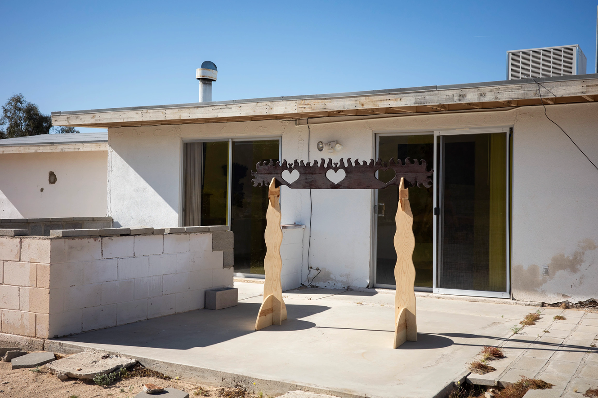
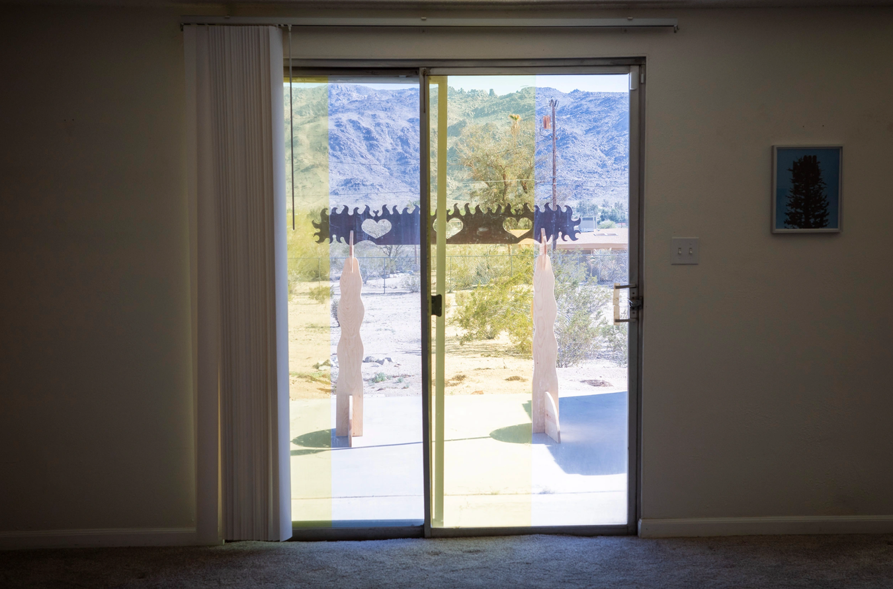
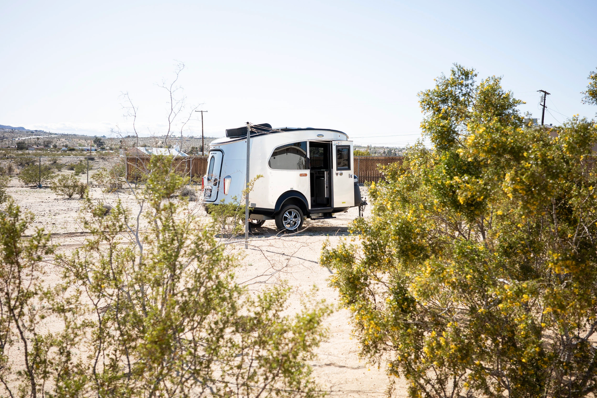
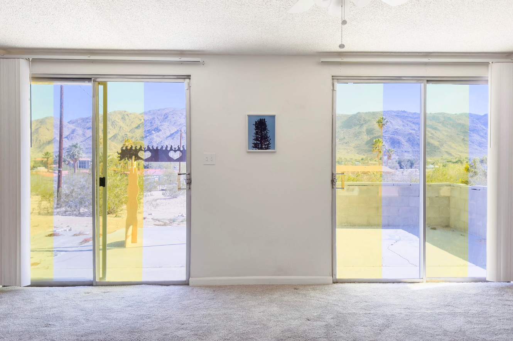

Amber Waves of Grain, Sessa Englund & Bjarne Bare at Institue of the Sun

Residency and show at 'Institute of the Sun' Twentynine Palms, CA, 2024.
Bjarne Bare and Sessa Englund, curated by Anna Frost.
"Nestled among the undulating fields of golden wheat, in the desolate expanse of Southern California's desert, where the sun blazes unforgivingly and the land sprawls out like a forgotten tapestry, there stands a modest home. This outpost, echoing the resilience and tenacity of the people who came before.
They fashioned their homes from the very earth beneath their feet, using age-old techniques passed down through generations to create shelters that stood defiant against the desert's relentless onslaught."
Bjarne Bare and Sessa Englund, curated by Anna Frost.
"Nestled among the undulating fields of golden wheat, in the desolate expanse of Southern California's desert, where the sun blazes unforgivingly and the land sprawls out like a forgotten tapestry, there stands a modest home. This outpost, echoing the resilience and tenacity of the people who came before.
They fashioned their homes from the very earth beneath their feet, using age-old techniques passed down through generations to create shelters that stood defiant against the desert's relentless onslaught."


